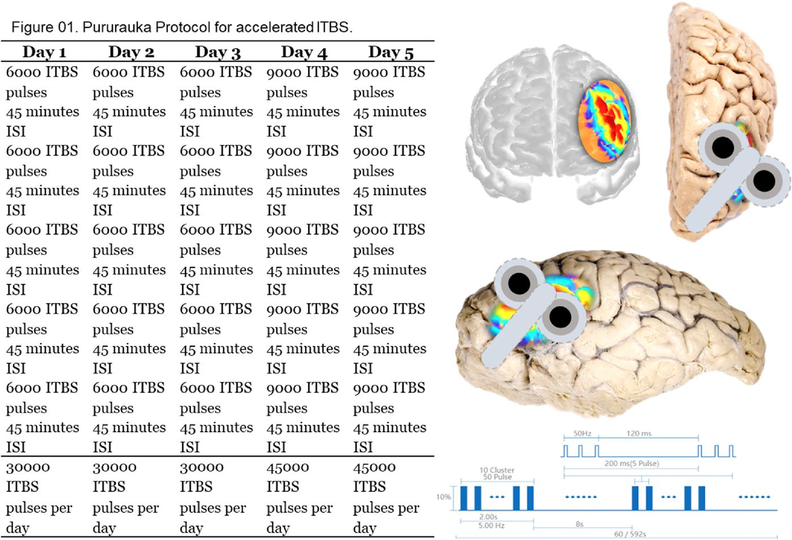
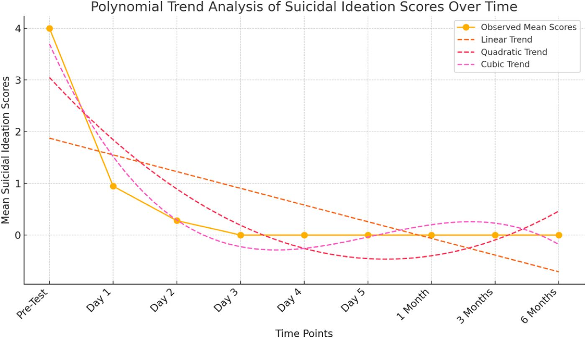

Pururauka
iTBS acelerada para el episodio depresivo grave con ideación suicida
Un protocolo de cinco días de estimulación theta burst intermitente sobre la corteza prefrontal dorsolateral izquierda, aplicado a adultos con episodio depresivo mayor grave, al menos dos tratamientos previos fallidos e ideación suicida. La ideación suicida se resolvió en la mayoría de los pacientes al tercer día y no se registraron eventos adversos graves.
- 36
- adultos tratados
- 5
- días de protocolo
- 180 000
- pulsos en total
- 68 %
- sin síntomas depresivos (MADRS) al terminar
«Pururauka» evoca la leyenda inca de las piedras que se convierten en guerreros. El protocolo se presentó en el 24th World Congress of Psychiatry (2024) y fue postulado al Premio Nacional Santiago Antúnez de Mayolo 2026.
Escala de Hamilton para la depresión (HAM-D), media
p < 0,001. Tres mediciones informadas; el eje horizontal no está a escala temporal.

